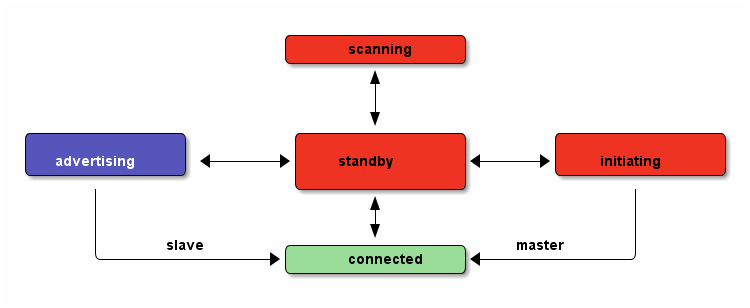
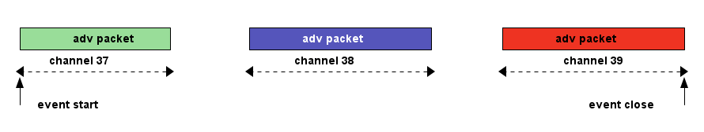
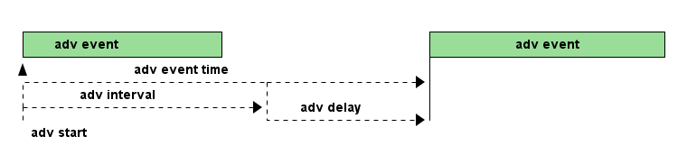
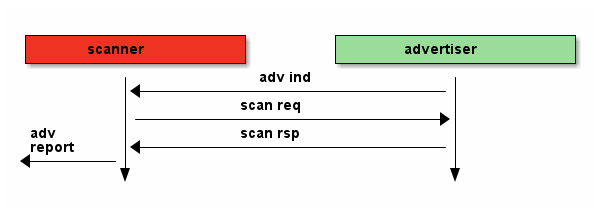
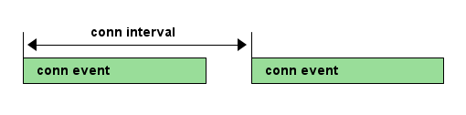
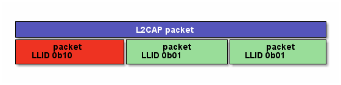
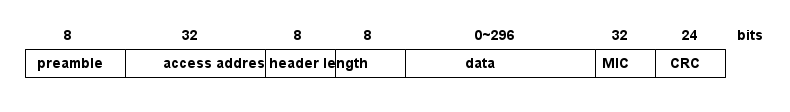

协议
Table of Contents
大族协议
ble
BLE采用星型拓扑结构，1个master最多连接3个slave，1个slave只能有1个master
controller物理层
频率带宽
- BLE使用频率为2.4GHz；
- BLE使用高斯频移键控(Gauss frequency-shift keying)作为调制方式，频移键控一个缺点是接收一个长的数值是一样的序列；
- 发送0，使用负的频偏，发送1，使用正的频偏，比如一个最小的频偏为180KHz，如果中心频率是2402MHz，那么0的传输频率是
2401.820MHz，1的传输频率是2402.180MHz；
- 传统蓝牙79个频带传输数据；
- BLE使用40个频段传输数据，每个频段的中心频率的计算公式：fc = 2402+2k, 从公式可以看出频带间隙为2MHz，最低频率为2402MHz， 最高频率为2480MHz；
- BLE的传输功耗必须小于ISM规定的免费频带的功耗，也就是功耗不能做的无限大，规定BLE的最大传输功耗为+10dBm(10mW)；
- BLE 的频率偏移容限也有规定，对于传输完1个完整的BLE包，每个传输频率相对于中心频率的偏移容限为 ±150KHz；
- 通道总共40个，3个为广播通道(37, 38, 39)，37个为数据通道(0~36)，广播通道上跑的是广播包，数据通道上跑的是数据包
- 跳频算法: 数据通道的跳频算法：f(n+1) = (fn + hop) mod 37;
接收灵敏度
- 接收灵敏度用 dBm 来衡量，规则规定 BLE 的接收灵敏度至少为 -70dBm，也就是说必须能够接收到 0.0000001mW 的电磁波信号，大多
数的产品都能做到 -90dBm 的灵敏度，即 1pW。
距离
- BLE的电磁波在空中主要的损耗来自路径损耗，经验公式：path loss = 40 + 25log（distance）, 如果发送功率为 -20dBm，接收机灵
敏度为-70dBm，则路径损失为50dB，则目前两设备的距离为 2.5 米, 具体如表tbl-pathloss-distance所示
| path loss | distance |
|---|---|
| 50dB | 2.5m |
| 60dB | 6.3m |
| 70dB | 16m |
| 80dB | 40m |
| 90dB | 100m |
| 100dB | 250m |
| 110dB | 630m |
controller链路层
状态机有standby、advertising、scanning、initiating、connecting，其转换状态如图img-ll-state-matchine

链路层状态机
standby状态
- 使用广播通道
- 被动扫描(passive scanning)
只是被动的接收广播数据，设备可以只配置接收机，不用配置发射机；
- 主动扫描(active scanning)
只要发现了新设备，就会发送"扫描请求"(scan request)，并接收新设备返回的扫描响应(scan response)；
advertising状态
- 使用广播通道，之后设备变成slave；
- 在在链路层，广播通道可以传输的数据有2种：广播数据(advertising data)，扫描响应数据(scan response data);
- 在1次广播事件中，广播包在3个广播信道上同时发送, 如图img-adv-event；

广播事件
- 广播间隔(adv interval)：两次广播事件之间的最小时间间隔，取值范围20ms~10.24s(20ms = 16*1.25ms, 10.24s=8192*1.25ms);
- 广播延时(adv delay):是一个随机数，取值0~10ms，实际上两次广播事件之间的时间是(adv interval+adv delay), 具体见图
img-adv-model, 在adv event time间，发送完adv后，将立马转到接收状态，看能否接收到SCANREQ or CONNREQ;

广播事件模型
- 4种广播分类：general、directed、nonconnectable、discoverable；
- general：当一个设备当前不是slave和master时，可以发送general的广播包，此类型广播可被连接；
- direct：当设备需要快速和别的设备进行连接时，这种广播包里面包含2个地址，一个是广播者自身的地址，一个是对方的地址(初始 化者)，当初始化设备接收到这个direct广播包时，立马在响应中发起一个链接请求；direct型广播有时间要求，如果这种广播持续 时间超过了，仍然没有设备进行连接，则BLE协议要求设备转为general型广播继续；发起direct型广播的设备不能被进行主动扫描， direct型广播包中也不能包含额外的数据，只能包含2个地址, 用来向特定的设备建立连接，此类型广播可被连接；
- nonconnectable：不能进行连接和扫描请求，只能在广播状态和挂起状态之间循环, 用来广播信息；
- discoverable：该型广播的设备，不能进入可连接状态，可以进入standby状态，但是可以被另一个设备进行scan request，然后回 复scan response，可以在该类型的广播包中包含动态数据，但是scan response中却只能包含静态数据；
- 4种广播类型：
- 可连接非定向广播(connectable undirected adv)：用于通用(general)广播，扫描响应时，任何其他设备都可以连接；
- 可连接定向广播(connectable directed ad):用于请求一个专门的设备连接，广播中不包含广播数据；
- 可扫描非定向广播(scannable undirected adv):用于广播数据和扫描响应数据给主动扫描的设备；
- 不可连接非定向广播(nonconnectable undirected adv):紧紧用于广播数据；
scanning状态
使用广播通道
- 被动扫描(passive scanning)：扫描者只监听广播频道的广播包，接收到广播包后，上传到host层；
- 主动扫描(active scanning):扫描者监听广播频道的广播包，接收到广播包后，回应一个"scann req"包，广播者则响应一个"scan
rsp"包，如图img-active-scan-flow；

主动扫描流程
initiating状态
- 使用广播通道；
- 之后设备变成master；
connecting状态
连接过程：当一个设备使用可连接广播包(general型、direct型)进行广播时，设备(初始化者，initiator)可以发起一次连接请求进行连 接，在每个连接事件期间，mater先发起通信，slave会在150us后做出回应(此150s用于半导体冷却，以便能够无误差的转入接收状态，被 定义为TIFS)；连接请求包(连接参数)包含如下内容，master可以随时给slave发送连接参数更新请求，来改变任何连接参数，在链路层 连接参数更新请求总是master发起，但是L2CAP层允许slave向master发送1个连接参数更新请求，master再向slave发送具体的更新请求； 即使没有数据要传输，连接事件依然要进行(除了slave latency)，确保对方还在线。
- 在连接时使用的access address：由master决定，如果master有多个slave，则master需要为每个slave维持一个access address；
- CRC初始值；
- 传输窗口值(transmit window size)：该计时在发送完连接请求后再延时（1.25ms+Transmit window offset)后，就开始计时，在这个
窗口开始计时时，设备就打开接收机开始接收包，如果在此窗口期内都没有接收到数据包，设备将终止接收，并在一个Conn
interval后重试，说白了就是决定接收机开多少时间；
- window size
- window interval
- 传输窗口偏移值(transmit window offset):是1.25ms的倍数，是一个值从0到Conn interval，说白了就是开启接收机时刻的前后偏移 时间；
- 连接间隙(conn interval):规定master和slave对话的频率，是两次连接事件开始之间的时间，1.25ms的倍数，7.5ms~4.0s之间, 模型
如图img-conn-model；

连接事件模型
- 跳连次数(slave latency):0~499之间，不能超过((Supervision timeout/Conn interval) - 1)，即比最大连接次数少1次；
- 连接超时值(supervision timeout)：10ms的倍数，100ms~32.0s之间，且必须大于(1+Slave latency)*(Conn interval)，即比最大忽 略次数多1次，如果连接超时，则返回广播or扫描or待机模式，如果Supervision timeout = 32s，conn interval是100ms，则在不超时 情况下最多可以传输320个conn event，则slave latency最多319个;
- channel map:37bit的bit map指示37个数据通道中哪些是bad(0)哪些是good(1)，
- frequency-hop algorithm increment:5~16之间的随机数，参与通道选择；
- sleep clock accuracy:表示master要求slave的时钟精度要求，从而决定连接事件的不确定窗口，好像跟transmit window offset有关；
master
- 一个设备不能既是master，又是slave；
- 一个已经是master的设备，不能再广播可连接的广播包，但是可以广播不可连接的广播包；
slave
- 一个设备不能同时是多个master的的slave；
- 一个已经是slave的设备，不能再广播可连接的广播包；
- 传统蓝牙设备却可以多个slave对一个master；
包(package)
- preamble 要么是0b01010101要么是0b10101010;
- access address
用于减少背景噪声被误读。
- advertising access address: 用于广播数据或者扫描或者初始化连接，固定为0x8E89BED6，这个数字具有很好的相关性；
- data access address: 用于两设备已经建立连接后的数据传输，具体值是一个随机数；
- header 头部的内容又是由是否是广播包或者数据包来决定；
- 广播包类型：
- ADV_IND:通用广播，说明自己是可以被连接的，广播中带有自己的地址，此类型广播可被连接；
- ADV_DERECT_IND:直接连接广播，用来向特定的设备建立连接，此类型广播可被连接；
- ADV_NONCONN_IND:不可连接广播，用来广播信息；
- ADV_SCAN_IND:可扫描广播
- SCAN_REQ:主动扫描请求
- SCAN_RSP:主动扫描响应
- CONNECT_REQ:连接请求
- 数据包包头：
- LLID: logical link identifier，决定数据包的类型，取值：
- 0b11：链路层控制包，用于管理连接，此包的数据直接传给链路层，不再上传给host；
- 0b10：链路层包只能装27B数据，而高层可以发送大于27B的数据, 分成若干个等于或小于27B的链路层包，为了标识高层数据的 开始，用此类型包，也表示上一个高层包完毕 。
- 0b01：标识高层数据的继续，见图img-llid-use, 可以利用此包一直发送0包；

llid用途
- SN: 序列号，只有1个bit，0和1交替变换，用于决定收到的包是一个新包还是一个重传包，每次连接事件都清0，说白了就是表示我 的包现在SN是啥，那么你给我发的包的NESN就要跟我的SN变换一下，我的NESN表示我下一包给你发的和你现在的SN不一样就对了， 如果一样就表示错了，要重发；
- NESN：下一个期望的序列号，用于发送设备告诉接收设备下一包的SN，如果接收设备当前的SN=0，那么接收到的包的NESN一定要是1 才行，这样才能使发送设备在下一包保证接收设备的SN是交替变换的，也表示接收到的包是正确的，否则表示此包需要重传，每次 连接事件都清0；
- MD：more data，用于通知接收设备是否还有数据要发送，1表示让接收设备继续开着接收机准备接收，0表示接收机可以立马关闭节 约功耗；
- LLID: logical link identifier，决定数据包的类型，取值：
- length 对于广播包，length域由6bit构成，有效值从6到37，对于数据包length域由5bit构成，有效值从0到31，对于广播包和数据包，其实 际数据域负载是0到31字节，广播包还需要包含6字节的广播地址，所以是6到37，所以需要6bit, 然后实际情况却是27字节，因为BLE一 般采用加密传输，加密传输时，在数据域负载后面，CRC前面还有4字节的消息完整性校验值MIC，所以此时负载就只有27字节了，然后 BLE设计时为了降低复杂性，将非加密传输也统一为27字节，所以才有说BLE传输一包的数据最多27字节；
- payload
- crc 计算内容header、length、payload，计算式子：CRC=x24+x10+x9+x6+x4+x3+x1+x0; 一个包是否接收正确，使用crc做唯一的 判断标准，只有加密传输时是否正确，那是加密层的事；
- 1个广播包可以包含多个AD structure型数据，AD structure结构：1字节长度+AD类型+AD data，由于有些设备只关心其中某些，所以 需要用长度和类型来确定这个AD structure的数据范围；
- 数据传输效率：数据传输通道上的包PDU = header(2B)+payload(27B max)=29B, 则最大包长length=preamble(1B)+access addr(4B)+ PDU(29B)+CRC(3B)= 41B, 协议规定BLE射频PHY传输速率1Mbps(1us per 1bit)，则一个有效27B的传输耗时41*8bit*1us=328us, 一个 27B的传输周期：328+150+80+150=708us
配对绑定(pairing bonding)
详细过程参考https://community.freescale.com/thread/332191 ;包的CRC值计算加密的payload数据，另外，header和length域不做加 密，BLE中的加密和认证使用AES引擎，加密时不使用SN、NESN、MD信息，所以加密payload时可以在任何时候，不用在传输时实时加密， 有助于降低峰值功耗，AES作用：
- 加密payload数据，加密的数据包格式如图img-encry-data，其中MIC是message integrity check，消息完整性值；

加密数据包格式
- 计算消息的完整性值；
- 签名数据
- 生成私有地址；
配对密钥的生成过程如图img-encry-procedure所示, SKD(session key diversifier)，IV向量，LTK(long-term key)用于生成
会话的会话密钥(session key)，而链路的加密使用session key; master和slave双方都要提供一个4直接的IV(组成8直接的IV)，一
个8字节的SKD(组成16字节)，而slave可以从LL ENC REQ这个请求的信息中推测出LTK，所以slave可以不用存储绑定信息，并且由于会
话密钥中需要SKD，所以LTK可以长期使用，session key的计算公式：SK = E_LTK (SKD_master || SKD_slave); AES要工作还需要初
始化向量IV，IV的计算公式 IV = IV_master || IV_slave ;在做具体的加密数据传输前，需做3次会话，见图
img-encry-procedure中的LL_START_ENC_RSP；当一个加密连接已经建立后，还可以通过LL_ENC_REQ(SKD)重启一个加密连接，此
时的session key将更新，但是这个请求一般甚少使用；总结下配对过程：
- 交换配对信息：通过pairing req和pairing rsp来交换；
- 认证连接：此步将生成一个TK，进一步利用TK交换出STK；
- 分发密钥:使用STK分发密钥信息, 包括LTK、EDIV、Rand、IRK、CSRK；

加密过程初始化
配对和绑定的区别：简单解释是，配对是双方安全特征(security feature)的交换和临时加密连接的生成；绑定是一个长期密钥的交换 (在绑定后) ，并存储这些密钥以便以后使用；
- 配对:是安全特征的交换，包括i/o能力，防中间人攻击的需求，密钥size等等，client端(master)发起交换；一旦配对特征交换完成， 一个临时密钥将生成并交换，链路将被加密，后续数据将进行加密传输；在这个临时加密连接中，将交换一个长期密钥(long term key), 它可以用于加密链接，也可以用于签名数据；
- 绑定：将配对后，交换的long term key进行存储(如果不存储也行，只是就不能进行绑定了)，并在下一次连接时使用之；如果绑定了， 则下次连接时，就可以不用进行敏感安全信息的交换，就能加密链接，只需要master发送一个“开始加密请求”，双方就会使用存储下 来的key来进行加密传输；
SMP(Security Manager Protocol)使用5种KEY工作，使用3种配对模式产生TK，进一步产生STK，利用STK加密传输LTK，CSRK，IRK：
- LTK：long-term key，用于产生每个链路层连接时的会话密钥(session key)，说白了就是后续数据传输时使用的加密密钥
- TK:temporary key，可以根据配对模式采用3种方式生成，Just Works，OOB，Passkey Entry，如表tbl-tk-gen；基于
SSP(secure simple pairing)的配对模式总共有4种，所谓的SSP，就是利用一定的信息来产生密钥，但是不能由此来解开密文；
- Numeric Comparison：这种就是在两个设备上显示一个6位数的数字，然后双方只需要点击"YES or NO"就能配对；
- Just Works：类似Numeric Comparison，只是没有显示屏和输入设备，默认选YES；
- Passkey Entry：一个有显示设备，一个有输入设备，显示设备上显示一个数字，然后在输入设备上输入就配对；
- Out Of Band：利用其他技术进行配对，比如NFC；
配对模式 Pairing Method TK 防中间人攻击 注意 Just Works 0 NO No authentication Passkey Entry 0 … 999999 YES Authenticated Interface allows displaying entering values Out Of Band Usually a full 128 bit key YES Authenticated - STK:short-term key, 用于2个设备第一次配对时加密链接，STK = AES128 (TK, Srand || Mrand)，Srand由发起者产生，Mrand由响应 者产生；
- CSRK: connection signature resolving key, 用于签名一个未加密的数据；比如一条连接没有进行加密，数据可以以明文传输，但是 可以对其使用CSRK进行签名附在数据后面，则接收方可以利用CSRK验签这些未加密的数据，保证发送方可信；
- IRK:identity resolving key, 用于产生和校验Random Resolvable Private Addresses，hash = AES128(IRK, prand), 其中 random_address = [hash || prand || 0b10]，说白了就是产生address的；
controller HCI层
HCI分物理接口和逻辑接口，逻辑接口定义了一系列的命令包格式，物理接口还定义了这些命令包如何在host和controller间传输；
- 连接句柄(connection handle): 当连接时，会产生一个HCI通道，这个通道被叫做连接句柄，可以用于标注数据包的来源和目的地；
host l2cap层
L2CAP：logical link control and adaptation protocol，它为上层提供面向连接和无连接的数据服务，并提供多协议功能和分割重组 操作，L2CAP允许上层协议和应用软件传输和接收最大长度64K的L2CAP数据包；
attribute
一个attribute包含3要素：attribute handle/attribute type/attribute value，一般还要包含attribute permission；
- attribute handle：可以区分同类(type)的attribute，通常使用16bit的地址来标志，取值从0x0001~0xFFFF, 0x0000保留；可以是为 存储器地址，但也可以是端口号等；
- attribute type：使用UUID来表示，用于识别不同的事务，比如温度/压力/距离等；UUID可以有128bit的，也可以有16bit的，使用
16bit的UUID时，可以转换到128bit，使用一个基UUID，00000000-0000-1000-8000-00805F9B34FB，比如16bit的UUID为0x2A01, 则
128bit的UUID为00002A01-0000-1000-8000-00805F9B34FB; BLE中16bit的UUID分类如表tbl-ble-uuid； 另外attribute type指
的就是declaration共有：primary service/secondary service/include/characteristic。
BLE的UUID分类 范围 作用 说明 0x1800~0x26FF service UUID Battery Service：0x180F 0x2700~0x27FF units 时间单位秒:0x2703 0x2800~0x28FF attribute type 就是declaration: 0x2900~0x29FF character descriptor 就是描述符descriptor 0x2A00~0x7FFF character type 就是具体的属性：device name - attribute value 一个attribute value可以使用的空间为(0~512byte);
- attribute数据库：一个最小的attribute数据库(6 attributes)必须包含最基本的项, 见表tbl-smallest-db
最小的attribute数据库 attribute handle attribute type attribute value 0x01 Primary Service GAP service 0x02 Characteristic Device Name 0x03 Device Name "value" 0x04 Characteristic Appearance 0x05 Appearance "value" 0x06 Primary Service GATT service - attribute permission
attribute permission只能用在attribute value上，不能用在type和handle上，一般又分为access permission/authentication
permission/authorization permission;
- access permission:决定哪类请求可以用在attribute上，请求类别有如下，其中同步操作意味着发起一个request必须得到一个
response才能进行第二次request，发起一个indication必须得到一个confirm才能进行另一个indication，而write command和
notification则不需要有回应，另外在发起request或indication，还未得到response和confirm期间，还能继续发起write command
和notification；
- find request；发现数据库中的attribute，server会给出response，同步操作(必须要得到response，才能进行第二个命令)；
- read request：读attribute value，server会给出response，同步操作；
- write request：写attribute value，server会给出response，同步操作；
- prepare write request：预写请求，当需要写入一个长的attribute 的value时，可以用，此请求包含写入数据的偏移地址，是 个原子操作，也就是需要写入完才能真正执行；
- execute write request：执行写入请求，也许和上面的预写请求相配合的；
- indication：can be sent anytime，client必须给出确认收到，同步操作；
- write command：写attribute value，server不会给出response，异步操作;
- notification：can be sent anytime，没有回应，异步操作；
- authentication(身份鉴定) permission: 决定哪个设备有权利操作attribute，分为authentication require/no authentication require，如果身份没有鉴定时访问attribute，则server可以使用SM层来鉴定client，client端(android)一般就会弹出要求输入 pin框的界面；
- authorization(授权) permission: server是否授权给client，如果没有被授权的client则不被允许访问，如果未授权，则client 端是没有弥补措施的(类似输入pin)；
- access permission:决定哪类请求可以用在attribute上，请求类别有如下，其中同步操作意味着发起一个request必须得到一个
response才能进行第二次request，发起一个indication必须得到一个confirm才能进行另一个indication，而write command和
notification则不需要有回应，另外在发起request或indication，还未得到response和confirm期间，还能继续发起write command
和notification；
secure
secure mode大体上分为2个级别，security mode 1和security mode 2，其中security mode 1针对于链接的加密与否(encryption)，其 下又分为3级，security mode 2针对于链接的签名与否(signing & encryption)，其下又分为2级, 在每次连接的生命周期中，都是从 security mode 1的level 1开始，在以后的进程中可以升级到其他级别，也可以降级，但是不能降到security mode 1的level 1；
- security mode 1
- level 1: 链接没有加密保护，链接没有保护措施，是open的；
- level 2: 链接有加密保护，但是此加密保护的密钥未作认证(unauthenticated)，即没有中间人攻击(MITM)的保护措施;
- level 3: 链接有加密保护，并且此加密保护的密钥已作认证(anthenticated)，具有MITM保护功能;
- security mode 2
- level 1: 链接有加密和签名保护, 但是此保护的密钥未作认证, 即没有MITM的保护功能；
- level 2: 链接有加密和签名保护，并且此保护的密钥已做认证，具有MITM的保护功能
android
当连接到Server的Gatt时(connectGatt())，将提供一个回调BluetoothGattCallback，里面的各个回调方法用于处理连接后的事务处理， 具体操作方法对应如表tbl-gatt-oper。
| 操作名称 | 操作代码 | 回调方法 |
|---|---|---|
| notification | gatt.setCharacteristicNotification() | onCharacteristicChanged() |
| 读Characteristic | gatt.readCharacteristic() | onCharacteristicRead() |
| 写Characteristic | gatt.wirteCharacteristic() | onCharacteristicWrite() |
| 可靠写操作 | executeReliableWrite() | onReliableWriteCompleted |
| 连接或者断开蓝牙 | … | onConnectionStateChange() |
| 读Descriptor | gatt.readDescriptor() | onDescriptorRead() |
| 写Descriptor | gatt.writeDescriptor() | onDescriptorWrite() |
| 读RSSI | gatt.readRemoteRssi() | onReadRemoteRssi |
| 发现服务 | gatt.discoverServices() | onServicesDiscovered |
| MTU改变 | requestMtu() | onMtuChanged() |
android-ble梳理
- btle概念
正如其名，ble相对于经典bt，提供了类似的通信距离，然后却使用明显更少的功耗。ble设备会进入睡眠模式，并且只为连接尝试或者
连接事件而唤醒。由此，开发者需要理解少量的基本的ble概念，但是不用关注那些经典btsocket编程所需要做的。
- gatt profile 所有的ble设备实现一个或者多个profile。一个profile是一个高层次的定义，定义了一个服务如何被用于一个应用。ble的profile 是基于gatt的，这是一个通过低功耗连接发送和接收小段数据量的规则。
- client client是这样一个设备，它发起gatt命令并且接收响应。对于我们这个例子，android设备将充当客户端角色。然而，android ble api 确实可以让android设备充当服务端。
- server server是这样一个设备，它接收gatt命令或请求，并返回响应，比如，心率检测器，健康温度计，位置导航设备充当服务端。
- characteristic characteristic是一个在client和server之间传输的数据值。比如，除了心率测量仪，心率检测仪也能够报告它当前的电池电压，设 备名称或者序列号。
- service service是一组characteristic，他们组织在一起完成一个特定的功能。许多设备都实现了设备信息服务，这个服务是由许多特征值 构成的，比如制造商名称，模式号，序列号，固件版本号。
- descriptor descriptor提供特征值的一些额外的信息。比如，温度值特征值可能有单位和范围的指标，传感器能够测量的上限，下限值。
- attribute service，characteristic，descriptor集中到一起作为attribute，由uuid标识（128bit）。确实是128bit，一般你只需关注下面高 亮的16bit，这些数字被sig预定义:xxxxxxxx-xxxx-xxxx-xxxx-xxxxxxxxxxxx;
- gatt operation
下面是一些使用这些概念的操作例子 ，这些是一个客户端用于发现服务器信息的所有命令。
- 发现所有主服务的uuid，比如，这个操作可以被用于决定一个设备是否支持设备信息服务。
- 发现给定服务的所有特征值，比如，一些心率检测仪也包含一个人体位置传感器特征值。
- 读写特征值的描述符，最常用的描述符之一是客户端特征值配置描述符，这个允许客户端设置通知来指示或通知一个特有的特征值。
- 如果客户端设置了通知使能位，服务器只要信息是有效变化，都将发送给客户端。同理，设置了指示使能位，也能使得服务器当数 据有效时发送通知给客户端，但是指示模式也要求一个客户端的响应。
- 读写特征值。以心率检测仪为例，客户端会读取心率测量仪的特征值。或者客户端可能当更新远端设备的固件时，写入一个特征值。
- 在Android上实践
既然我们知道了BLE的基本概念，让我们标注一下操作它的关键步骤。再次重申，你使用的设备必须支持API18或者更高。
- AandroidManifest.xml
首先在你的manifest中声明下面的权限，BLUETOOTH权限允许你连接到一个设备，BLUETOOTH_ADMIN权限允许你发现设备。
<uses-permission android:name=“android.permission.BLUETOOTH” /> <uses-permission android:name=“android.permission.BLUETOOTH_ADMIN” /> <uses-feature android:name=“android.hardware.bluetooth_le” android:required=“true” />
- 获取BluetoothAdaptor并使能
下面的代码获取BluetoothAdaptor类，这个是设备发现所必要的，这段代码也检查android设备是否使能Bluetooth，并且如果没有使
能也会请求用户使能。注意，这段处理过程同连接到经典蓝牙需要做的一样，然后，过了这步，就不一样了。
BluetoothManager btManager = (BluetoothManager)getSystemService(Context.BLUETOOTH_SERVICE); BluetoothAdapter btAdapter = btManager.getAdapter(); if (btAdapter != null && !btAdapter.isEnabled()) { Intent enableIntent = new Intent(BluetoothAdapter.ACTION_REQUEST_ENABLE); startActivityForResult(enableIntent,REQUEST_ENABLE_BT); } - 设备发现
通常，连接到设备的第一步是设备发现，这是一个异步的过程，因此，我们必须要产生一个回调BluetoothAdaptor.LeScanCallback
的实现，每当发现一个设备都会回调。
private BluetoothAdapter.LeScanCallback leScanCallback = new BluetoothAdapter.LeScanCallback() { @Override public void onLeScan(final BluetoothDevice device, final int rssi, final byte[] scanRecord) { // your implementation here } }使用上面的实现，我们可以使用下面的方法调用，开始和停止设备发现
btAdapter.startLeScan(leScanCallback); btAdapter.stopLeScan(leScanCallback);
- 产生BluetoothGattCallback
既然你已经有了一个BluetoothDevice对象，下一步就是连接过程。这需要实例化BluetoothGattCallback类，在这个类中有许多有用
的方法，但是下面的代码关注一些必要的部分。
private final BluetoothGattCallback btleGattCallback = new BluetoothGattCallback() { @Override public void onCharacteristicChanged(BluetoothGatt gatt, final BluetoothGattCharacteristic characteristic) { // this will get called anytime you perform a read or write characteristic operation } @Override public void onConnectionStateChange(final BluetoothGatt gatt, final int status, final int newState) { // this will get called when a device connects or disconnects } @Override public void onServicesDiscovered(final BluetoothGatt gatt, final int status) { // this will get called after the client initiates a BluetoothGatt.discoverServices() call } }最后，使用下面的调用来初始一次连接。
BluetoothGatt bluetoothGatt = bluetoothDevice.connectGatt(context, false, btleGattCallback);
- 发现服务和特征值
假定连接尝试成功了，回调BluetoothGattCallback.onConnectionStateChange()将会被回调，其参数newState被设置为
BluetoothProfile.STATE_CONNECTED。这次事件后，发现服务可以被初始化了。正如名字隐含的，下面调用的目标是决定远端设备支
持哪个服务。
bluetoothGatt.discoverServices();
当设备回应时，你将会收到回调BluetoothGattCallback.onServicesDiscovered()，在你获得一系列支持的服务前，你必须处理这个 回调。并且一旦你有了设备支持的一系列服务，就可以使用下面的代码来获取那些服务的特征值 。
List<BluetoothGattService> services = bluetoothGatt.getServices(); for (BluetoothGattService service : services) { List<BluetoothGattCharacteristic> characteristics = service.getCharacteristics(); } - 配置描述符为通知（Notify）
到目前为止，我们已经连接到了设备，发现了它支持的服务，获得了每个服务下的一系列特征值。现在我们拥有了一些基本信息，让
我们做些有用的。以心率检测仪为例，我们希望仪器给我们发送有规律的用户心率。再看看之前谈到的Client Characteristic
Configuration Descriptor，它可以使能远端设备的通知功能。下面的代码描述了我们如何获得描述符，然后使能通知标签。
for (BluetoothGattDescriptor descriptor : characteristic.getDescriptors()) { //find descriptor UUID that matches Client Characteristic Configuration (0x2902) // and then call setValue on that descriptor descriptor.setValue( BluetoothGattDescriptor.ENABLE_NOTIFICATION_VALUE); bluetoothGatt.writeDescriptor(descriptor); }注意uuid值0x2902的引用，我们之前谈到的，16bit的uuid一般才是我们关注的。每个服务，特征值，描述符，都有uuid。
- 接收通知
那个心率监测仪发送了测量数据给android设备，你将接收到一个回调BluetoothGattCallback.onCharacteristicChanged(),下面的
代码展示了怎样接收那些那些数据。
@Override public void onCharacteristicChanged(BluetoothGatt gatt, final BluetoothGattCharacteristic characteristic) { //read the characteristic data byte[] data = characteristic.getValue(); } - 断开和关闭
在最后，要断开和关闭GATT客户端，使用下面的调用：
bluetoothGatt.disconnect(); bluetoothGatt.close();
- 注意点
- 在尝试连接时停止设备发现，正如上面说的，设备发现应该停止来阻止电池泄露。在尝试连接前停止设备发现会有助于获得更好 的连接结果。
- 轮询所有的GATT操作（连接尝试，设备发现，读写特征值），每次只执行一个，证据表明底层GATT操作不是排队执行的，有些还 会失败，如果你不自己处理。
- 当APP关闭时，用尽所有尝试来断开设备连接和关闭GATT客户端，如果会话继续保持开启，用户将可能很难进行设备重连接，除非 之前的连接超时，或者蓝牙被android系统回收，或者设备重启。
- 在初始化设备发现后，保存设备的MAC地址，参见BluetoothDevice.getAddress()，然后，下次用户想连接，使用这个地址来构建 BluetoothDevice，参见BlueAdaptor.getRemoteDevice(),这样可以避开设备发现，使得用户体验更平滑友好。
- AandroidManifest.xml
首先在你的manifest中声明下面的权限，BLUETOOTH权限允许你连接到一个设备，BLUETOOTH_ADMIN权限允许你发现设备。
usb
usb枚举过程
- usb检测到usb设备插入后，就会先对设备复位，usb设备在总线复位后其地址为0；
- usb主机通过控制传输发起获取设备描述符的标准请求，标准的设备描述符共18个字节，而usb主机第一次获取设备描述符时都只获取 前8个字节的设备描述符（到能够判断usb设备端点0的最大包长度）；
- 复位一次usb设备，进入地址设置阶段；
- SET_ADDRESS标准请求，设置地址（地址包含在此标准请求的wValue字段中）；
- 循环的试探usb设备支持的标志请求（如果某些标准请求不支持，usb主机会中断，并重复第5步）；
- 各个描述符
- GET_DESCRIPTOR获取设备描述符（全部18个字节）；
- GET_DESCRIPTOR获取配置描述符（前9个字节，可以知道有多少接口、端点、字符串描述符等）；
- GET_DESCRIPTOR获取字符串描述符（语言id）；
- GET_DESCRIPTOR获取字符串描述符（序列号serial number）；
- GET_DESCRIPTOR获取配置描述符（全部的配置描述符，包括接口、端点、类）；
- GET_DESCRIPTOR获取设备限定描述符（用于高速全速集成的设备，usb设备可能不支持，可能退到第5步重复，并跳过f）；
- GET_DESCRIPTOR获取字符串描述符（语言id）；
- GET_DESCRIPTOR获取字符串描述符（产品product）；
- GET_DESCRIPTOR获取报告描述符REPORTDESCRIPTOR（多用于HID等，usb设备可能不支持，退回到第5步重复，并跳过i）;
- SETCONFIGURATION设置配置值（wValue中的值为configuration中bConfigurationValue字段的值，在此之前usb主机将根据之前获取 的信息vendor id/product id等找到该usb设备的驱动程序）；